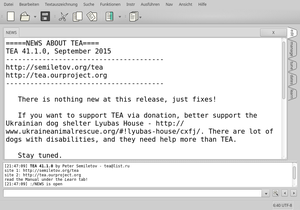

TEA
Dieser Artikel wurde für die folgenden Ubuntu-Versionen getestet:
Ubuntu 16.04 Xenial Xerus
Ubuntu 14.04 Trusty Tahr
Zum Verständnis dieses Artikels sind folgende Seiten hilfreich:
TEA 
 ist ein äußerst funktionsreicher und plattformübergreifender Editor. Er bietet beispielsweise die Integration von Docbook und LaTeX. Außerdem bietet er eine Projektverwaltung, umfangreiche Möglichkeiten zur Konfiguration und viele Bearbeitungsfunktionen, die weit über das Standardrepertoire anderer Editoren hinausgehen. Vergleichbar ist das Programm mit Geany.
ist ein äußerst funktionsreicher und plattformübergreifender Editor. Er bietet beispielsweise die Integration von Docbook und LaTeX. Außerdem bietet er eine Projektverwaltung, umfangreiche Möglichkeiten zur Konfiguration und viele Bearbeitungsfunktionen, die weit über das Standardrepertoire anderer Editoren hinausgehen. Vergleichbar ist das Programm mit Geany.
Ursprünglich wurde TEA für GTK entwickelt, seit einiger Zeit wird das Programm aber mit einer Qt-Oberfläche ausgeliefert. Während ältere Versionen Qt 4 nutzen, wird ab Ubuntu 15.10 Qt 5 verwendet.
Installation¶
 TEA ist in den offiziellen Paketquellen vorhanden. Man braucht nur das folgende Paket installieren [1]:
TEA ist in den offiziellen Paketquellen vorhanden. Man braucht nur das folgende Paket installieren [1]:
tea (universe)
 mit apturl
mit apturl
Paketliste zum Kopieren:
sudo apt-get install tea
sudo aptitude install tea
Verwendung¶

TEA kann bei Ubuntu-Varianten mit einem Anwendungsmenü über den Eintrag "Zubehör → TEA Text Editor" gestartet werden [2]. Alternativ verwendet man den Befehl tea.
Die Programmoberfläche ist mittels Reitern (Tabs) gegliedert. Dabei steht jeweils ein Reiter für jede geöffnete Datei zur Verfügung. Zusätzlich befinden sich am rechten Fensterrand in der Voreinstellung fünf vertikale Reiter:
"edit" - Bearbeitungsfunktionen
"manage" - Projektverwaltung
"tune" - Einstellungen
"dates" - Kalender
"learn" - integriertes englisches Handbuch
Unterhalb des Editierbereichs gibt es noch ein Protokollfenster und ein Suchfeld.
Tipps¶
Man kann das Programm außergewöhnlich umfangreich an die eigenen Vorlieben anpassen, z.B. unter "Instr -> Font gallery" die Standardschrift und unter "Ansicht" die Art der Darstellung ändern.
Links¶
Managing Image and Text Files in One Application
- Free Software Magazine, 07/2012A Smooth Text Editor That Hits the Sweet Spot
- LinuxInsider, 03/2012Problemloser Ausbau - Texteditor Tea für schlanke Systeme
 - LinuxUser, 05/2008
- LinuxUser, 05/2008Editoren
 Programmübersicht
Programmübersicht
- Erstellt mit Inyoka
-
 2004 – 2017 ubuntuusers.de • Einige Rechte vorbehalten
2004 – 2017 ubuntuusers.de • Einige Rechte vorbehalten
Lizenz • Kontakt • Datenschutz • Impressum • Serverstatus -
Serverhousing gespendet von